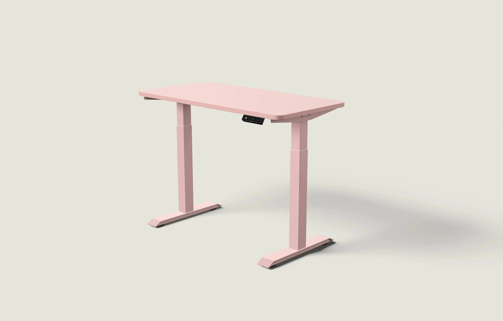
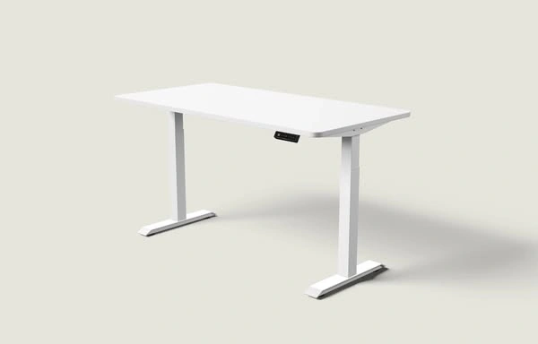

Desktronic Creative DNA
样本：9张去重图片、9条广告记录。仅描述本次样本，不推断整个品牌预算、效果或完整策略。图像组件能支持构图与道具观察，不能支持整张广告文案版式判断。
常用构图
完整产品三分之四视角，空台面，统一低饱和背景和柔和投影。
高频卖点
轮廓、台面与桌架配色、尺寸、裸桌架边界。
使用场景
多数是产品布景；另见第三方广告主的真实桌椅工作区。
人物
所保留静态图没有完整使用者，第三方素材通过生活物件建立使用感。
配色
浅灰绿底，粉色、橄榄绿、胡桃木、黑白产品。
促销
本次保留图主要靠产品图而非大折扣；不能据此推断整个品牌促销策略。
辨识度
同角度同投影的选型一致性强，也最容易被误当成大量不同创意。
Furniwell可借鉴方法
无遮挡轮廓、颜色关系、统一透视用于尺寸选择。
不照搬的元素
D形品牌标识、独特配色当作Furniwell可售选项、第三方用户评价或星级。
代表素材

DESK-GOOG-002DESK-GOOG-002 · Desktronic · Google · 真实广告内的图像组件（非完整广告版式）
原广告来源
详情日期与德国地区已核验。
 DESK-GOOG-031
DESK-GOOG-031DESK-GOOG-031 · Desktronic · Google · 真实广告内的图像组件（非完整广告版式）
原广告来源
详情日期与德国地区已核验。

DESK-META-1932019537461827DESK-META-1932019537461827 · Desktronic · Meta · 广告中的静态图片
原广告来源
德国公开列表的起止日期与研究窗口相交。
 DESK-META-980177638167248
DESK-META-980177638167248DESK-META-980177638167248 · Desktronic · Meta · 广告中的静态图片
原广告来源
德国公开列表的起止日期与研究窗口相交。